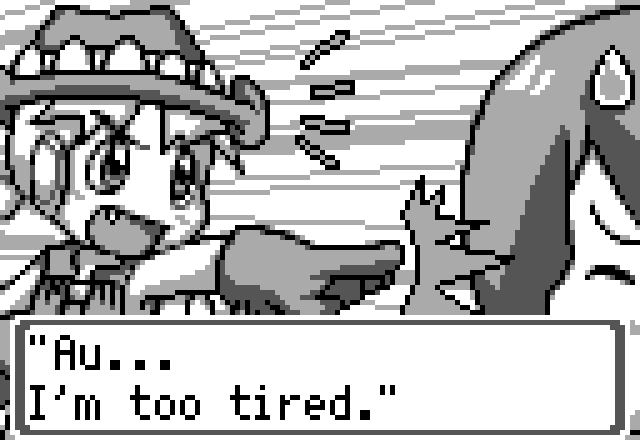
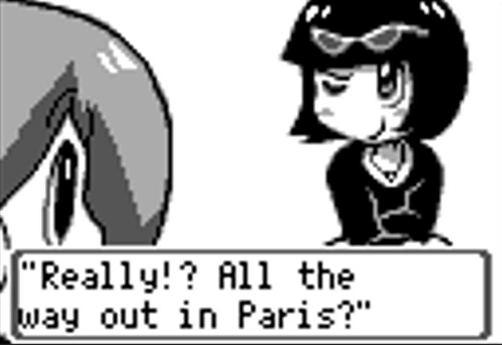
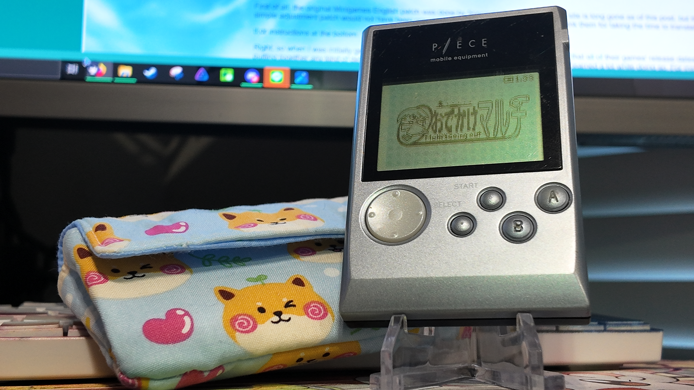

1game1week - Week 28 (7/9/25) - Odekake Multi
Hey all! It's week 28! (7/9 -> 7/16)
This will all sound like yapping, but I promise this all ties back to the actual game in the post.
This may sound silly, but I'm starting formal Japanese classes this Friday. I'm really excited about it.
I tried learning back in 2019 via a game, actually. It was actually really enjoyable and I did really learn a lot, despite its eroge-adjacentness (I don't think it ever got to eroge territory, though)
Before long, I was able to read hiragana and katakana, as well as construct incredibly small sentences. My university work really picked up around then and then the year changed to 2020, so I never was able to really get back into learning.
My friend Billy (btuberbilly.github.io/doujinarchive) comes up a lot in these posts. A few years back, he told me he was taking online university JP classes, which were really interesting!
Billy is really passionate about translation work. In fact, we became closer friends initially because he recruited me for some minor translation work for a GBC game (although the project never really came to fruition).
So... I decided, I too would like to start learning the language and put an earnest effort into it. The class wasn't overly expensive and the teacher seems really nice.
Well. They start "officially" on Friday, but the first assignment (mostly just setting up a JP keyboard, some minor logistics, etc) was already sent out.
I wrote a whole self-introduction, too, which I was really happy about. It's really basic, just saying "my name is XYZ I like ABC". It made me really happy to be able to construct sentences that made sense, though, even if they're not optimal or fully gramatically correct / optimized.
Figured I'd share. I like using this section as a small "let's catch up!" blurb. I don't post much online other than these posts, and I rarely talk to people outside of really close friends. I don't want to seem closed off like that, I guess.
Anyways!
New games from 6/25 -> 7/1:
Silent Hill 2 - Restless Dreams (Xbox) (Thank you for the gift Billy)
Currently, my backlog is at +15 (lower is better, +0 from last week).
And onto 1g1w. Once again, a game is considered "beaten" if I've accomplished the main objective of the game.
GAME: Odekake Multi (Multi's Going Out)
PLATFORM: P/ECE
GENRE: Idle
STARTED ON: 6/28
BEATEN ON: 6/29
TOTAL PLAYTIME: 15 hours and 20 minutes (tracked via a modded-in game timer)
What the h*ck is a P/ECE?
The P/ECE is a cute little handheld by Aquaplus. If I were to put it in really simple terms, it's a GameBoy with a larger screen that gets its games via USB with some onboard flash storage to keep them in.
Runs on one AA battery for a little while. The P/ECE I have was gifted to me by my friend, Billy, who also translated the entirety of Odekake Multi from Japanese to English.
That's right! The blurb at the beginning of the post was relevant after all!

The release of this translation coincided with the release of the ToHeart remake.
I wasn't really sure how to classify this game, but I really think 'Idle' is probably the best genre this game can get.
The main premise is the Robomaid Multi, a character from ToHeart, going out. She'll go on little walks around six different places which unlock progressively.
Every so often, based on time "walking" in-game, you unlock the Robomaid Challenge. The long and short of it is you play a card version of Rock Paper Scissors against another Robomaid from another country.

While on walks, you get various different items that either alter your stats during the walk, or random "unknown" equipment. This is a cool part: to "identify" the random equipment, you have to connect your P/ECE to your PC, and run the PC version of Odekake Multi. There's not a lot to it on the PC, and your main gameplay loop is on P/ECE.
But the PC is necessary here to be able to identify things. The ultimate goal (I think) is to build up a full encyclopedia of all the game's items, but this would probably take a massive effort.
After 15 hours, I was able to win the Robomaid Challenge Tournament and had Multi become the ultimate Robomaid. Most of the time spent was just idling on Multi's walks, as the Rock Paper Scissors sections were very short. It probably accounted for an hour or so of the total gameplay. The rest of the time was me watching The Truman Show or Squid Games Season 3.
Speaking of which, my friend Billy was super considerate in adding an "in-game timer" specifically for me because I mentioned how annoying it was that a lot of games just didn't have timers.
The logic went this way:
Every time the game ticks (10 times a second), a value is written to a specific address range in the save file. When this address is converted from Hex to Decimal and divided by 10, you would have your seconds played. Divide by 60 twice, and you have your hours played. It was legitimately a super cool thing to do and a clever way of implementing it.
The game is cute and the robomaids have really fun dialogue to read, but there wasn't really a lot of substance gameplaywise for me to really be enthralled by it- though, it really is an awesome project and I'm really proud of my friend. I hope to read more of his projects when they come.
Once again, thank you and massive props to Billy for this release.

Thanks for reading! If you need to contact me for any reason, please feel free to email me at aru@hoshikawa-aru.com.